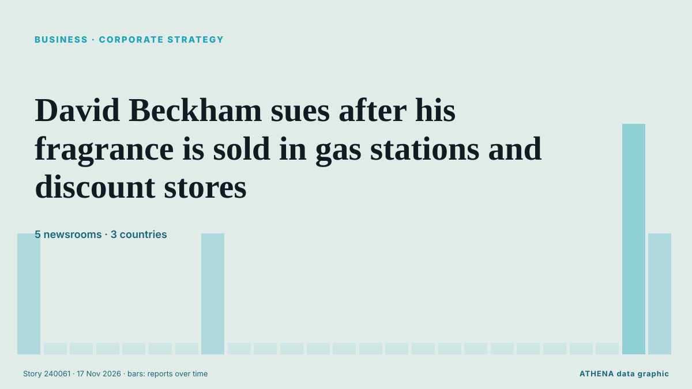

Business, Companies & Investment
SponsoredPresented by  Cybernetics and Artificial Intelligence Lab Welcome to the Cybernetics and Artificial Intelligence Laboratory, established at the Department of Business Administration of the National and Kapodistrian University of Athens. The lab is headed by Professor Dimitrios Thomakos. The lab aims to do research that can be published in top venues. Our research uses tools and methods of Artificial Intelligence, and lies in the following areas: - Forecasting - Decision making - Cyber security - Finance We are always looking forward to collaborating with exceptional students!
Cybernetics and Artificial Intelligence Lab Welcome to the Cybernetics and Artificial Intelligence Laboratory, established at the Department of Business Administration of the National and Kapodistrian University of Athens. The lab is headed by Professor Dimitrios Thomakos. The lab aims to do research that can be published in top venues. Our research uses tools and methods of Artificial Intelligence, and lies in the following areas: - Forecasting - Decision making - Cyber security - Finance We are always looking forward to collaborating with exceptional students!

Corporate strategyDavid Beckham sues after his fragrance is sold in gas stations and discount stores
David Beckham’s company is suing beauty group Coty for at least $41 million, alleging that sales of his perfumes in discount stores breached their licensing agreement and damaged his luxury brand. from The Independent
| 4 Nov | 111 |
|---|---|
| 5 Nov | 111 |
| 6 Nov | 77 |
| 7 Nov | 33 |
| 8 Nov | 58 |
| 9 Nov | 108 |
| 10 Nov | 122 |
| 11 Nov | 102 |
| 12 Nov | 95 |
| 13 Nov | 63 |
| 14 Nov | 39 |
| 15 Nov | 33 |
| 16 Nov | 84 |
| 17 Nov | 26 |
Diamondback to Buy Double Eagle’s Midland Stake for $5 Billion
Diamondback Energy agreed on Monday to buy Double Eagle’s 40% share of their Midland Basin partnership for cash and stock that Reuters valued at about $5.03 billion, a purchase that gives it a bigger… from OilPrice.com
Couple charged over unlicensed Dinar Dirham investment scheme
SHAH ALAM, Nov 17 — A married couple faced charges in the Sessions Court here today with accepting public deposits... from Malay Mail
South Africa’s Telkom in Takeover Talks
MTN Group confirmed early talks to buy all of Telkom on 16 November 2026, with cash as the expected payment. from The Rio Times
Yangon Condo Raid Reveals Myanmar’s Cyber Scam Sector Thriving in Commercial Capital
Regime operation nets 106 suspects, signaling multibillion-dollar online fraud industry is spreading from borderlands to big cities. from The Irrawaddy
When is Amazon’s Black Friday 2026 sale? Plus the best early deals
There’s up to 65 per cent off already in Amazon’s early Black Friday sale. from Evening Standard (London)
Vietnam's top leader arrives in China for 33rd APEC Economic Leaders' Week
Vietnam's Party General Secretary and President To Lam arrived in Shenzhen, China's Guangdong Province on Tuesday morning to attend the 33rd Asia-Pacific Economic Cooperation (APEC) Economic Leaders'… from VnExpress International
Coca-Cola HBC confirms JSE listing
It also confirms that its long-mooted purchase of Coca-Cola Beverages Africa is on track for a 27 November completion. from Moneyweb
Woman tricks friend into giving her £25k for fake Lanzarote pub
Geraldine McGrath convinced her elderly friend to give her money over a five-year period, saying it would help fund retirement. from WalesOnline
Gulftainer and TiL plan 2.2m teu Jakarta terminal outside Pelindo's Priok estate
The 2.2m teu Marunda terminal that Gulftainer, MSC's Terminal Investment Limited and KCN plan would sit on KCN's 70-year ministry concession rather than on Pelindo's Tanjung Priok estate, and would… from Container Magazine
"I'd Work For Myself": How A Rejected H-1B Visa Changed Kunal Bahl's Life
After his H-1B visa was rejected in 2007, Microsoft suggested that Kunal Bahl return to India and work from its local office. from NDTV
Frictionless ASEAN trade seen boosting growth
THE International Monetary Fund (IMF) said it remains committed to supporting the Association of Southeast Asian Nations (ASEAN)… from BusinessWorld
States defy Butler over puberty blocker bans as new guidelines back access
The recommendations could prove a test for the Liberals in the Victorian election after One Nation said the party would fight to ban the treatment if elected. from The Age
Bharat Semi raises $24 million to develop intelligent sensors for AI
The India- and US-based startup is developing programmable sensors that integrate sensing and AI, targeting applications across robotics, vehicles, drones and consumer electronics. from Business Standard
Trump administration targets further limits on skilled foreign workers
The US plans tougher green card rules for companies hiring foreign workers, with stricter recruitment checks, a 90-day job advertising requirement and restrictions on employers that have recently… from Livemint
Kosovo demands EU explanation over Serbian nationalist song at Brussels forum
Kosovo Prime Minister Albin Kurti said that his government banned the purchase, sale, import and export of electricity by Serbian companies, including. from N1 Serbia (English)
NCP(SP)’s Supriya Sule seeks ‘one formula for every state’ during delimitation
She added that ‘women’s reservation must be implemented during delimitation’. from Scroll.in
MSC Cruises to launch Singapore-based sailings from 2028, with voyages across Southeast Asia
Under a three-year partnership with the Singapore Tourism Board, MSC Orchestra will begin operating eight- to 12-night cruises from Singapore in late 2028, with stops in countries including Thailand… from CNA (Channel NewsAsia)
Tesla Cybercab orders open at $29,990 + $299/mo, only in Robotaxi zones
Tesla is now inviting “select customers” to buy a Cybercab for personal use at $29,990, but the car won’t move unless you also pay $299 a month for an “Autonomy Subscription.” And it only works… from Electrek
Canada pledges up to $392 million to Brazil-led forest fund
Canada pledged up to $392 million to a Brazil-led fund that uses investment returns to help conserve tropical forests and support communities. from UPI World News
Flagship Pioneering expands to UK with £100m AI-native lab
Flagship's UK investment marks another sign of turning tides for the UK life sciences sector, following prior big pharma funding pullouts. from Pharmaceutical Technology
Shaun Tait, Kusal Mendis want extra push for Pakistan-Sri Lanka series result
Sri Lankan skipper Kusal Mendis and Pakistan bowling coach Shaun Tait urged their teams to push hard for a result in the second and final Test starting on Tuesday in Rawalpindi. from Dawn
Family Dollar Will Pay $63 Million for Inflated Price Claims
Dollar-store chain’s settlement with FTC and state officials comes after Guardian exposé of its pricing practices Discount store giant Family Dollar will pay $63m to settle claims by state and… from Guardian Business
US urges owners of 720,000 BMW vehicles to park outside over fire risks
BMW is still working on the recall fix and is aware of 10 fire incidents that may related to the issue. from The Independent
11 gadgets under $10 that solve everyday problems
Lots of tech purchases run into the hundreds of dollars, but you don't have to spend a lot to make some upgrades. from Engadget
Hungary plans to complete Paks II audit by year-end
Attila Sagodi, chairman of the board and CEO of Paks II, said Hungary’s new government is very interested in the project, but decision-makers do not yet have all the information they need. from TASS (English)
EU gives green light to UniCredit's takeover of Commerzbank
(ANSA) - BRUSSELS, 16 NOV - The European Commission said Monday that it has unconditionally given the green light to UniCredit's hostile takeover of Germany's Commerzbank. from ANSA English
Port of Blyth Unveils $265M Offshore Wind Expansion Plan
The UK's Port of Blyth has unveiled plans for an investment program of up to $264.5 million (£200 million) to expand its infrastructure and capacity to support offshore wind and clean energy… from MarineLink
Sofinnova closes second crossover fund at €725M for late-stage European biotechs
Sofinnova Partners has secured €725 million ($815 million) for its second crossover fund, which it said would fill the financing gap for late-stage European biopharma and medtech companies. from Endpoints News
Greece Plans New Funding to Modernize Street Markets
Development Minister Takis Theodorikakos says new financial support is being considered to help vendors upgrade equipment, cut operating costs and adapt to the green transition. from to vima
Shell Egypt Starts Gas at Mina West Field
Shell Egypt started production at Mina West in the Mediterranean on 15 November 2026, aiming for 160 million standard cubic feet a day. from The Rio Times
New mobile phone cameras on the way
New cameras to catch drivers on their phones are being installed in Adelaide. from Sydney Morning Herald
Bessent calls for ‘dramatic shakeup’ at Nvidia, urges outside CEO
Bessent has criticized Howard Lutnick’s department over suspected chip diversion to China while defending President Donald Trump’s handling of the matter. from CNBC World
Yang Ming Marine Transport Sees Strong Revenue and Profit Growth in Q3 2026
Yang Ming Marine Transport reports significant revenue and profit growth for the first three quarters of 2026, driven by strong demand and peak-season momentum. from SeaNews Türkiye
Sabarimala pilgrims can now send prasadam home through India Post
Thiruvananthapuram: Devotees visiting Sabarimala will soon be able to send Aravana Payasam and other temple offerings to their homes through India Post, which is setting up a round-the-clock special… from Deccan Herald